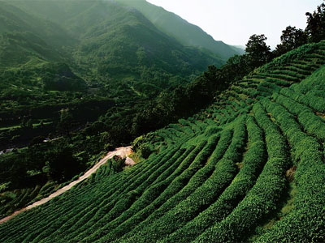
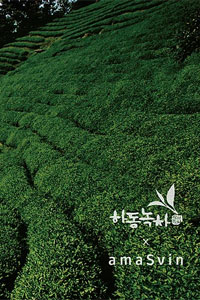
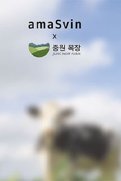
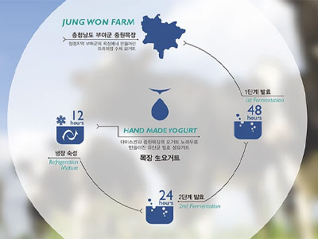
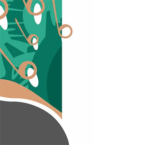
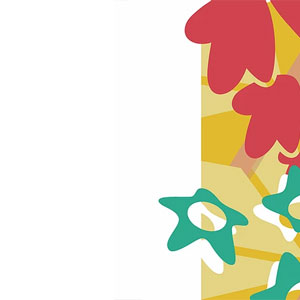

- 
하동 녹차
Ha Dong Green Tea
임금님 수랏상에 올리던 상급 중의 상급 차.
안개, 토양, 다습, 기온차, 해풍이 있는 최적의 재배 조건.
삼국시대부터 시작된 한국 노차의 최초 재배지.
하동군의 녹차를 사용합니다.
- 

중원 목장 요거트
Jung Won Farm Yogurt
청정지역 부여군의 최대규모인 중원목장에서
좋은 먹거리를 먹고 자란 소에서 나온 우유와
아마스빈의 유산균 노하우가
프리미엄 수제 목장 요거트를 만듭니다.


도시 농가 카페 로스터리
City Farm House Cafe Roastery
본연의 맛을 추구하는
프리미엄 커피 전문 브랜드 DOCO ROASTERY와
아마스빈 전문 로스터의 협업으로
변치 않는 한 잔의 커피를 만듭니다.
